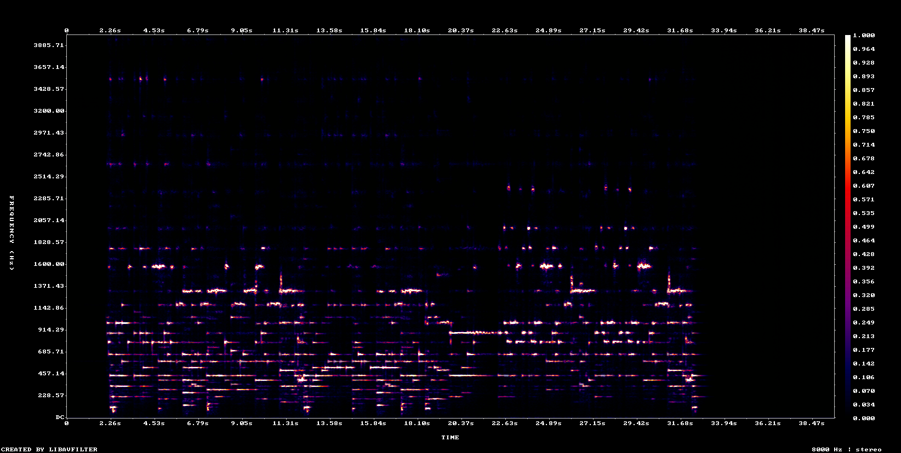
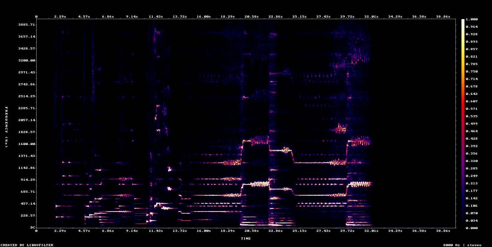

ACE-Step 1.5 音乐生成大模型 · 器乐为主，中段插入一段风格化戏曲女声唱腔 · 单曲测试，未写入正式 manifest
A 器乐 → B 唱腔 → A 器乐，三段 2 s 等功率交叉淡化；
开头与结尾都是器乐，唱腔只在中间一段出现。[Instrumental]
同 seed，仅 lyrics 不同


| 波形相关系数 | 0.019 | 越低说明 lyrics 改动越大 |
| 上谐波峰值 2–4k / 0.3–1k | 0.046 → 0.124 | 器乐段 → 唱腔段，局部抬升即唱腔乐句 |
| 1–4 kHz 能量占比 | 0.363 → 0.285 | 全段平均，长拖腔下反而可能下降 |
| 音节调制 3–10 Hz | 0.218 → 0.027 | 「啊——」式长拖腔音节率天然偏低，仅作参考 |
| 有效片段长度 | 31.08 s / 31.12 s | A / B，已去掉模型静音尾；共修补 11 处咔哒 |
| 成品循环点 | 86.60 s | 平滑边界搜索 + 首尾 2 s 等功率交叉淡化 |
[inst]
[verse]
云开月照古城楼
一嗓西皮绕画梁
[chorus]
啊—— 啊——
[inst]
[inst] 让首尾回到纯器乐，[verse] / [chorus] 是唱腔段。Beijing opera xipi liushui, jinghu erhu lead with sparse pipa plucks, D zhi pentatonic mode, 98 BPM, cinematic Chinese opera game BGM, sparse airy arrangement, classic Chinese opera atmosphere with an optional brief expressive female opera vocal phrase and melismatic drawn-out singing, mostly instrumental, no drums, no percussion, no gongs, no ambient sound effects, steady tempo, no tempo change, seamless loop
生成脚本：gen_vocal_test.py · 指标明细：tmp/vocal_test_report.json。
本测试曲不进入 manifest.json，需要正式收录时再手动加条目。